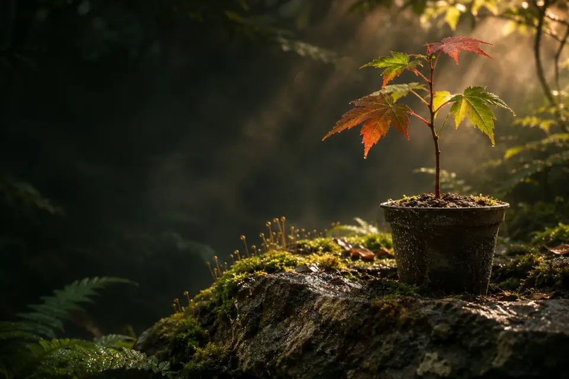

About the collection
A life measured
in seasons.
ANEVUM is an independent botanical and creative archive by Devon Alan Akins, documenting five seed-grown red maples from their earliest years.
The founding idea
A collection
that grows up.
The five original Acer rubrum seedlings survive from the 2026 growing season. Their individual records will become richer over time through actual photography and careful observation, without rewriting their beginnings.
Meet the collection
2026 and beyond.Illustrative environment, not collection photography
A place for family and time
Living things are
never finished.
One of the red maples was chosen by a family member. A separately transplanted acorn is being observed as a provisional experiment. Their history is a part of this collection, but individual photographs and botanical identifications must be verified before publication as specimen evidence.
Read the provisional field note